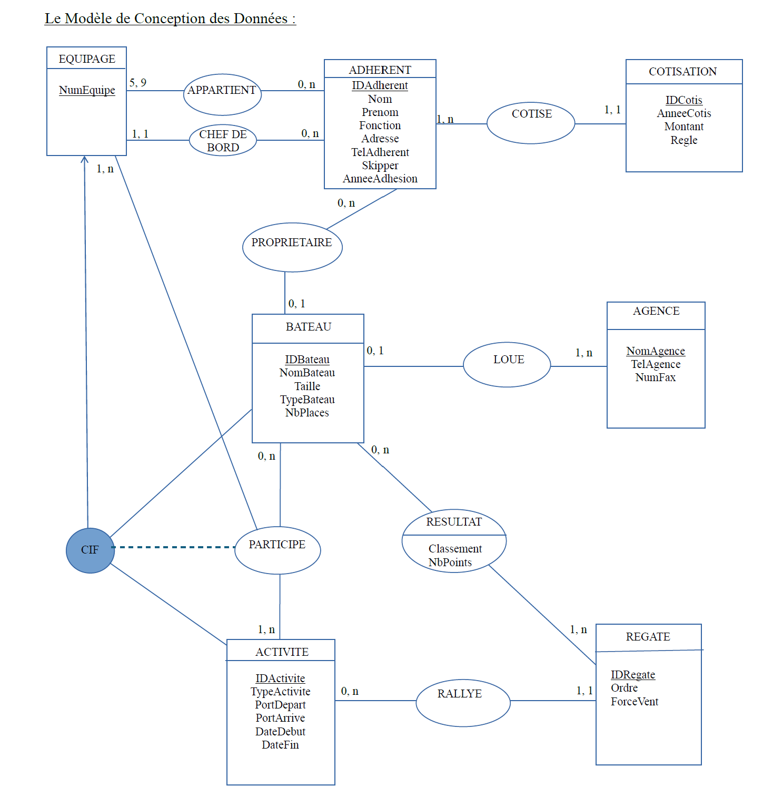
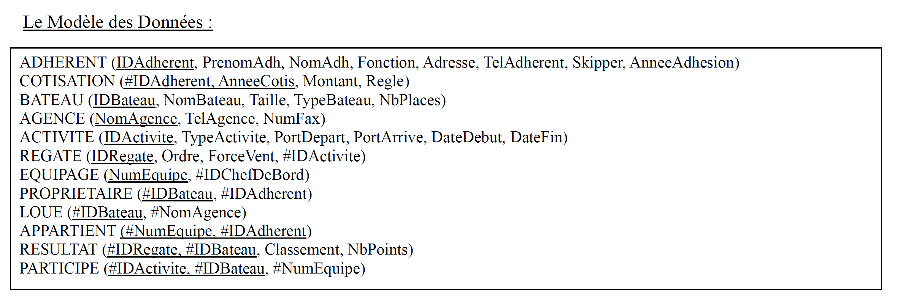

Base de données pour les activiés d'une association
Description
Ce projet porte sur la mise en place d’une base de données destinée à gérer les activités d’une association organisant des sorties en voilier.


Organisation
Pour ce projet, nous étions deux. Nous avons travaillé tout le temps ensemble pour réaliser les rendus demandés. Nous avions des temps prévus pour cela et n’avons pas eu besoin de plus. Nous avons suivi les étapes au fur et à mesure.
Acces au projets
Conclusion
En conclusion, nous avons crée une base de données fonctionnelle pour les activités d’une association. Tout cela nous a appris à réfléchir au contexte et à la version plus cohérente de voir le problème.